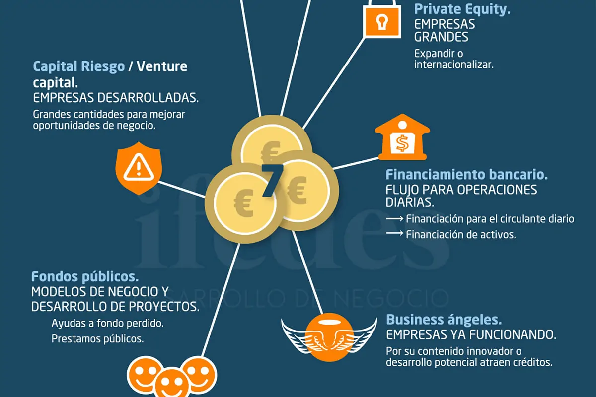

Financiación
Por Raúl Chinchilla Albertus
1. Introducción
Emprender un nuevo proyecto, ya sea en el ámbito empresarial o en el campo de la investigación, requiere no solo de una buena idea y motivación, sino también de recursos económicos que lo hagan posible. En la actualidad, cada vez son más las personas interesadas en lanzar sus propias iniciativas o en desarrollar estudios innovadores, pero muchas de ellas se enfrentan al mismo obstáculo: no saber cómo ni dónde conseguir financiación. Tanto los emprendedores como los investigadores necesitan acceder a fondos que les permitan transformar sus ideas en realidades concretas. Por ello, es fundamental conocer y difundir las distintas formas de financiación disponibles, así como entender los mecanismos, requisitos y oportunidades que ofrece cada una de ellas.
2. ¿Qué tener en cuenta para emprender?
Uno de los mayores desafíos a la hora de emprender un proyecto es conseguir la financiación necesaria para ponerlo en marcha. Contar con una buena idea es solo el primer paso; convertirla en una empresa sostenible requiere planificación, estrategia y recursos. Por eso, antes de buscar apoyo económico, es fundamental desarrollar un plan de negocio sólido que defina claramente el problema que se quiere resolver, el modelo de negocio, el mercado objetivo, la competencia, las previsiones financieras y los objetivos a corto y largo plazo.
Este documento no solo sirve como guía interna, sino también como herramienta clave para presentar el proyecto ante posibles inversores o entidades financiadoras.
Además, resulta esencial preparar un pitch convincente, es decir, una presentación breve que resuma de forma clara y atractiva los puntos clave del proyecto. Muchas veces se cuenta con apenas unos minutos para captar la atención de un inversor, por lo que es importante saber comunicar el valor del negocio de forma directa y profesional.
A esto se suma la importancia de contar con una identidad visual cuidada, una presencia digital coherente y una comunicación clara de los valores y objetivos del proyecto.
Aunque a veces pueda parecer un detalle menor, confiar en uno mismo, mantenerse firme frente a las críticas negativas y no rendirse ante las dificultades son actitudes que marcan la diferencia. Quienes han logrado sacar adelante sus proyectos coinciden en que la perseverancia y la seguridad en sus ideas han sido claves en su camino. No se trata de ignorar los obstáculos, sino de aprender a enfrentarlos con determinación y seguir avanzando incluso cuando las cosas se ponen cuesta arriba.

3. Financiación en emprendimiento
| Característica | Crowdfunding | Business Angels | Capital Riesgo (VC) | Préstamos Bancarios | Subvenciones Públicas | Aceleradoras / Incubadoras |
|---|---|---|---|---|---|---|
| Quién aporta el dinero | Muchas personas (público general) | Personas individuales con alto patrimonio | Fondos de inversión profesionales | Bancos u otras entidades financieras | Gobiernos o instituciones públicas | Organizaciones especializadas (privadas o públicas) |
| Cuánto dinero aportan | Pequeñas cantidades por persona | Cantidades medias (decenas de miles) | Cantidades grandes (cientos de miles o millones) | Según capacidad crediticia y plan de negocio | Varía según el programa | Generalmente pequeñas a medianas cantidades |
| Cuándo invierten | Muy al inicio, incluso idea o prototipo | Etapas tempranas (pre-seed o seed) | Etapas de crecimiento o expansión (serie A en adelante) | En cualquier momento con capacidad de pago | Normalmente en fases tempranas o estratégicas | En etapas muy tempranas |
| Qué reciben a cambio | Recompensas, participación o intereses | Participación en la empresa (acciones) | Participación en la empresa (acciones) | Pago con intereses | Nada a cambio directo (no dilutivo) | A veces participación; otras veces solo apoyo |
| Aportan experiencia? | No (salvo en algunos casos de equity) | Sí, normalmente asesoran y hacen mentoring | Sí, aunque menos cercanos que los ángeles | No | No directamente, aunque puede incluir formación | Sí, suelen ofrecer mentoring y formación |
| Nivel de riesgo | Medio-alto | Alto | Alto | Bajo para el banco, alto para el emprendedor | Bajo para el emprendedor | Medio |
| Proceso de acceso | Relativamente sencillo, abierto al público | Hay que contactar y convencer personalmente | Proceso más complejo y profesionalizado | Formal y burocrático, con garantías necesarias | Competitivo y requiere presentar proyectos | Competitivo pero orientado a startups |
4. ¿Qué tener en cuenta para buscar la financiación para una investigación?
La investigación científica es un pilar esencial para el avance del conocimiento, la resolución de problemas sociales y el desarrollo tecnológico. Sin embargo, llevar adelante un proyecto de investigación no depende únicamente de tener una idea innovadora o una hipótesis sólida. Requiere también contar con recursos económicos, humanos y técnicos que permitan desarrollar el trabajo en condiciones óptimas. Por eso, la obtención de financiación se convierte en una etapa crucial del proceso investigador.
Buscar financiación para una investigación implica afrontar un proceso competitivo y exigente. No se trata solo de solicitar fondos, sino de elaborar una propuesta clara, bien fundamentada y capaz de transmitir la relevancia del proyecto. Uno de los primeros pasos es definir con precisión los objetivos de la investigación, la metodología a utilizar, el calendario de trabajo y los resultados esperados. A esto se suma la necesidad de justificar de forma detallada el presupuesto requerido, indicando en qué se invertirán los fondos y cómo se gestionarán los recursos. Todo esto queda plasmado en la memoria técnica del proyecto, un documento clave que sirve como base de evaluación en la mayoría de convocatorias de financiación.
Además de presentar una propuesta técnica sólida, es fundamental comprender qué tipo de convocatorias se adaptan mejor al perfil del proyecto y del equipo investigador. Existen diversas fuentes de financiación, tanto públicas como privadas, a nivel local, nacional e internacional. Por ejemplo, proyectos con un enfoque tecnológico pueden encontrar más apoyo en entidades como el CDTI (Centro para el Desarrollo Tecnológico y la Innovación), mientras que investigaciones de impacto social o ambiental pueden optar a fondos ofrecidos por fundaciones o programas europeos como Horizonte Europa.
También es importante estudiar con detalle los criterios de evaluación de cada convocatoria: algunas priorizan la innovación, otras la aplicabilidad, la colaboración entre instituciones o la transferencia de resultados a la sociedad o al sector productivo. En todos los casos, adaptar la propuesta a los objetivos y valores de la entidad financiadora aumenta significativamente las posibilidades de éxito.
Por otro lado, conviene tener en cuenta aspectos como la trayectoria del equipo investigador, el grado de colaboración con otras instituciones o empresas, y la viabilidad del proyecto a largo plazo. A menudo, se valora también la capacidad del proyecto para generar publicaciones, patentes, desarrollo de productos o impactos en políticas públicas.
En resumen, conseguir financiación para una investigación requiere planificación, conocimiento del ecosistema de ayudas, y una presentación rigurosa del proyecto. Preparar una buena propuesta no solo aumenta las posibilidades de ser financiado, sino que también contribuye a estructurar mejor la propia investigación y anticipar posibles dificultades en su desarrollo.
5. Financiación en investigación
| Característica | Crowdfunding Científico | Subvenciones Públicas (I+D) | Programas Europeos (p. ej. Horizon Europe) | Fundaciones Privadas | Colaboraciones Empresa-Universidad | Financiación Interna (institucional) |
|---|---|---|---|---|---|---|
| Quién aporta el dinero | Público general (microdonaciones) | Gobiernos nacionales/regionales | Unión Europea u organismos supranacionales | Organizaciones sin ánimo de lucro | Empresas privadas y universidades públicas | La propia universidad o centro de investigación |
| Cuánto dinero aportan | Pequeñas cantidades | Desde miles hasta millones de euros | Grandes presupuestos (cientos de miles a millones) | Varía (desde miles hasta cientos de miles) | Varía según el acuerdo | Normalmente cantidades pequeñas a medias |
| Cuándo financian | En fases iniciales o para divulgación | Fases iniciales y desarrollo | Proyectos de largo plazo con alto impacto | Según la convocatoria | Proyectos aplicados, generalmente con TRL medio | Fases iniciales o mantenimiento básico |
| Qué reciben a cambio | Nada (interés social/divulgativo) | Resultados, informes, publicaciones | Transferencia de conocimiento, impacto social | Resultados alineados con su misión | Resultados aplicables y posibles patentes | Publicaciones, visibilidad académica |
| Aportan experiencia? | No directamente | A veces formación y redes de contacto | Sí, networking europeo y asesoría técnica | A veces mentoría o colaboración técnica | Sí, conocimiento aplicado y acceso a recursos | A veces mentoría interna o apoyo estructural |
| Nivel de riesgo | Bajo para donantes | Bajo-medio | Medio (alta exigencia técnica y burocrática) | Medio | Compartido entre empresa y universidad | Bajo |
| Proceso de acceso | Abierto pero requiere buena divulgación | Convocatorias competitivas | Muy competitivo y complejo | Postulación con proyecto alineado a objetivos | Acuerdo formal entre partes | Interno y regulado por política institucional |
6. Dónde y cómo empezar a buscar financiación
En la actualidad, acceder a financiación tanto para proyectos de investigación como para iniciativas de emprendimiento es más viable que nunca. Esto se debe, en gran parte, al creciente interés por parte de la sociedad en fomentar la innovación, el desarrollo tecnológico y la creación de nuevas empresas.
Cada vez más personas apuestan por emprender o por impulsar investigaciones que generen impacto, y esto ha llevado a una ampliación considerable de las opciones de apoyo económico disponibles. Instituciones públicas, entidades privadas e incluso plataformas colectivas ofrecen vías de financiación adaptadas a distintos perfiles, etapas y sectores.
Esta evolución ha contribuido a que hoy en día existan herramientas y recursos accesibles para quienes estén dispuestos a investigar un poco y a presentar propuestas bien estructuradas. Contar con información actualizada y saber dónde buscar puede marcar la diferencia entre quedarse con una idea o convertirla en un proyecto real.
A continuación, te comparto un par de páginas muy útiles que conviene explorar si estás interesado en buscar financiación y dar el primer paso hacia tu proyecto:
ENISA
ENISA, la Empresa Nacional de Innovación, es una entidad pública española que depende del Ministerio de Industria y Turismo. Su principal función es apoyar la creación, crecimiento y consolidación de pequeñas y medianas empresas (pymes) innovadoras mediante un tipo de financiación muy específico: los préstamos participativos. Este tipo de préstamo es especialmente interesante para emprendedores porque no requiere avales ni garantías personales, lo que lo convierte en una opción accesible y menos restrictiva que otros instrumentos financieros tradicionales.
Una de las principales ventajas de los préstamos participativos de ENISA es su flexibilidad. A diferencia de un préstamo bancario convencional, se adaptan a la evolución de la empresa: además de un tipo de interés fijo, incluyen un componente variable ligado a los resultados de la compañía. Esto permite a los emprendedores disponer de mayor margen en las etapas iniciales de crecimiento, cuando los ingresos todavía son limitados.
ENISA ofrece diferentes líneas de financiación, pensadas para cubrir las distintas etapas del ciclo de vida empresarial. Por ejemplo, la línea “Jóvenes Emprendedores” está dirigida a menores de 40 años que ponen en marcha un proyecto empresarial y necesitan una ayuda inicial para desarrollarlo. La línea “Emprendedores” se orienta a apoyar empresas recién constituidas sin límite de edad, mientras que “Crecimiento” está pensada para negocios ya establecidos que buscan expandirse o ganar competitividad. Existen también líneas más específicas, como la destinada a emprendedoras digitales, otra para empresas del sector agroalimentario y rural, y una orientada a industrias culturales y creativas.
CDTI
El CDTI, o Centro para el Desarrollo Tecnológico y la Innovación, es una entidad pública dependiente del Ministerio de Ciencia, Innovación y Universidades de España. Su objetivo principal es fomentar la innovación tecnológica de las empresas españolas, especialmente a través del apoyo a proyectos de investigación, desarrollo e innovación (I+D+i). Actúa como puente entre el mundo científico y el tejido empresarial, ayudando a transformar ideas innovadoras en productos, procesos o servicios competitivos.
Una de las funciones más destacadas del CDTI es la concesión de ayudas financieras a empresas que quieren desarrollar proyectos tecnológicos. Estas ayudas pueden adoptar diferentes formas: desde subvenciones directas hasta créditos parcialmente reembolsables, que solo se devuelven si el proyecto tiene éxito. Esto reduce el riesgo para las empresas y les permite asumir proyectos más ambiciosos. Además, el CDTI no solo financia grandes compañías; también tiene programas especialmente pensados para pymes, startups tecnológicas y consorcios de investigación público-privados.
Para facilitar el acceso a esta financiación, el CDTI ofrece herramientas como su “Matriz de Ayudas”, una plataforma interactiva que permite a las empresas identificar fácilmente qué tipo de apoyo es el más adecuado según el tipo de proyecto (investigación industrial, desarrollo experimental, innovación tecnológica, etc.), el grado de madurez de la tecnología o la fase del ciclo empresarial. Esta matriz es muy útil para orientarse en un ecosistema que puede parecer complejo, y ayuda a tomar decisiones estratégicas sobre qué convocatoria o programa conviene más.
Además, el CDTI tiene una fuerte proyección internacional. Participa activamente en programas europeos como Horizonte Europa y en iniciativas multilaterales como EUREKA, Eurostars o PRIMA. Esto facilita que las empresas españolas puedan colaborar con socios internacionales y acceder a fondos europeos para investigación conjunta.
El proceso para solicitar ayudas del CDTI es riguroso y profesional. Las empresas deben presentar una memoria técnica detallada del proyecto, que incluya los objetivos, la metodología, el impacto esperado, el equipo implicado y una justificación clara del presupuesto. Esta memoria es evaluada por expertos técnicos y financieros, que valoran la viabilidad y el grado de innovación del proyecto antes de emitir un informe.
En definitiva, el CDTI es una herramienta clave para impulsar la I+D+i en España, especialmente útil para empresas que quieren diferenciarse mediante tecnología propia o colaboración científica. Más que una simple fuente de financiación, actúa como socio estratégico para quienes apuestan por la innovación como vía de crecimiento.
F6S
F6S es una plataforma global que conecta a startups, emprendedores e investigadores con oportunidades de financiación, programas de aceleración y recursos para el crecimiento empresarial. Actúa como un punto de encuentro entre innovadores y entidades que ofrecen apoyo financiero y estratégico.
Una de las iniciativas destacadas gestionadas por F6S es el proyecto X2.0, financiado por el programa Horizon Europe. Este proyecto tiene como objetivo impulsar el crecimiento de startups de tecnología punta en Europa. Ofrece programas personalizados de cinco meses centrados en áreas clave como fabricación y economía circular, AgriTech, HealthTech y BioTech, ciudades inteligentes y sostenibilidad, y datos e inteligencia artificial. A través de estas iniciativas, se proporciona a las startups servicios de innovación y escalado, facilitando su acceso al mercado y fortaleciendo su competitividad.
Además, F6S sirve como plataforma para la presentación de propuestas en diversas convocatorias de financiación, como la iniciativa Mind4Machines. Esta convocatoria financia el desarrollo, testeo, validación y adopción en el mercado de soluciones de industria 4.0, con el objetivo de aumentar el nivel de madurez tecnológica de las soluciones propuestas. Las propuestas se presentan a través de formularios en la plataforma F6S, facilitando el proceso de solicitud para los innovadores